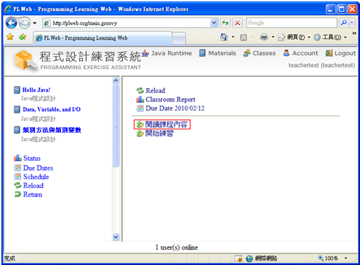

1.
如果要在某一章中嵌入外部HTML教材，便可以按下edit project  ，接著在Project Editor中增加一對 file.html 及相對應 HTML的URL，再 Confirm並上傳至主機後即可。
，接著在Project Editor中增加一對 file.html 及相對應 HTML的URL，再 Confirm並上傳至主機後即可。


而相對應的課程網頁，即可呈現被嵌入的HTML內容：


2.
如果要在某一章中嵌入自編HTML教材，便可以按下open explorer  瀏覽目前編輯教材檔案的路徑(Client端電腦)。
瀏覽目前編輯教材檔案的路徑(Client端電腦)。

複製目前編輯教材檔案的路徑。

將自行編寫的HTML教材，在瀏覽器功能表列選擇檔案(P)中的另存新檔(A)。

將教材名稱(如：lesson.html)儲存到目前編輯教材檔案的路徑中，並選擇存檔類型(T)為網頁, 完整(*htm;*html)後按儲存(S)將HTML教材網頁進行儲存。

按下edit project  。
。
在Project Editor中增加一對 file.html 及相對應的 HTML檔名(如：lesson.html)，再 Confirm並上傳至主機後即可。

按  (upload project) 上傳教材並結束嵌入HTML教材的編輯。
(upload project) 上傳教材並結束嵌入HTML教材的編輯。

選擇  (Play) 瀏覽剛剛上傳的HTML教材。
(Play) 瀏覽剛剛上傳的HTML教材。